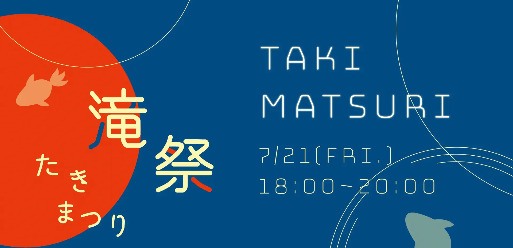
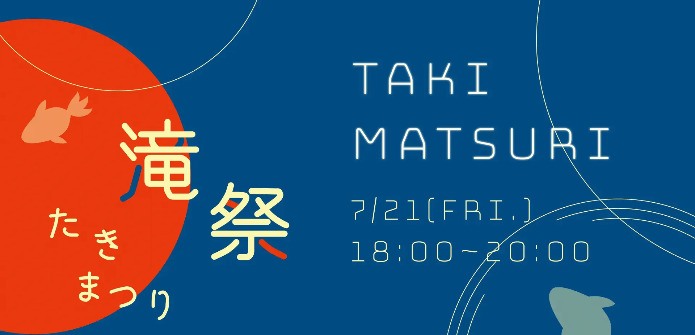
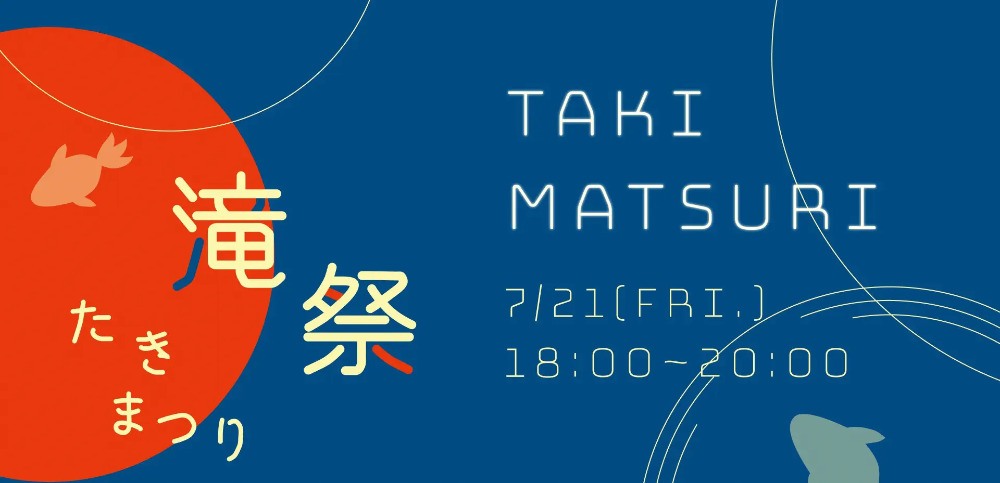
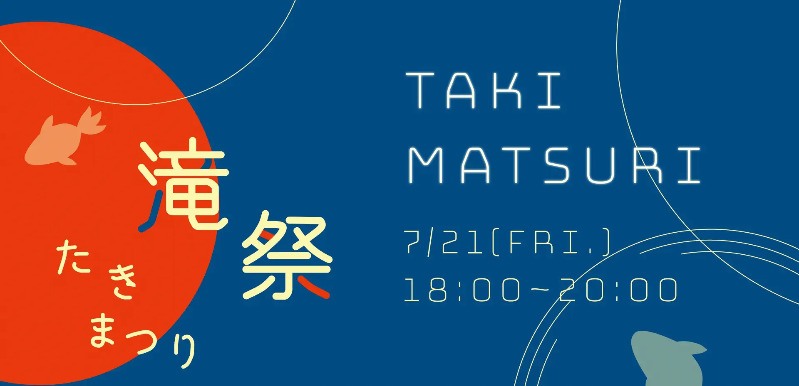

夏の夜にTaki Plazaで国際交流しましょう！！
Let's have international exchange at Taki Plaza on the summer night
!
日時(date)：７月２１日(金) １８時 ～ ２０時
場所(place)：Taki Plaza 地下２階
射的・ヨーヨーすくい・スーパーボールすくい・かき氷があります！
We have preparShooting, yo-yo scooping, super ball scooping,
shaved ice, etc. !
参加フォームはこちらから
Participation form here !
過去４回、Taki Barというイベントを開催しました。
We held "Taki Bar" for four times.
今回実施する滝祭は、Taki
Barが生まれ変わったイベントです。
"Takibar" has been renewed for "Takimatsuri"

Taki Bar開催報告はこちら
About Taki bar